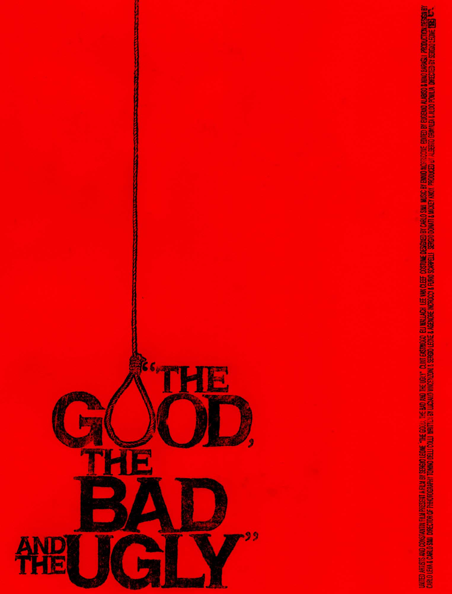
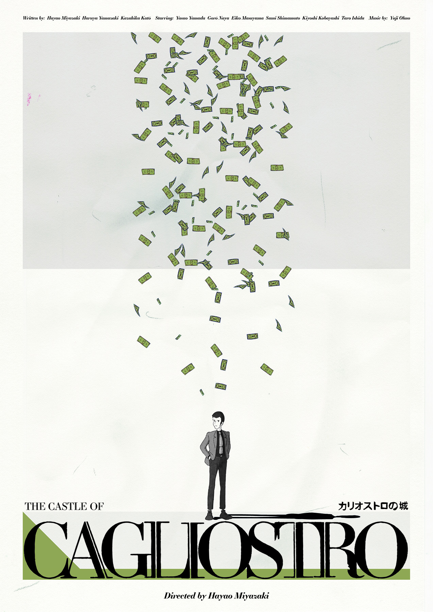
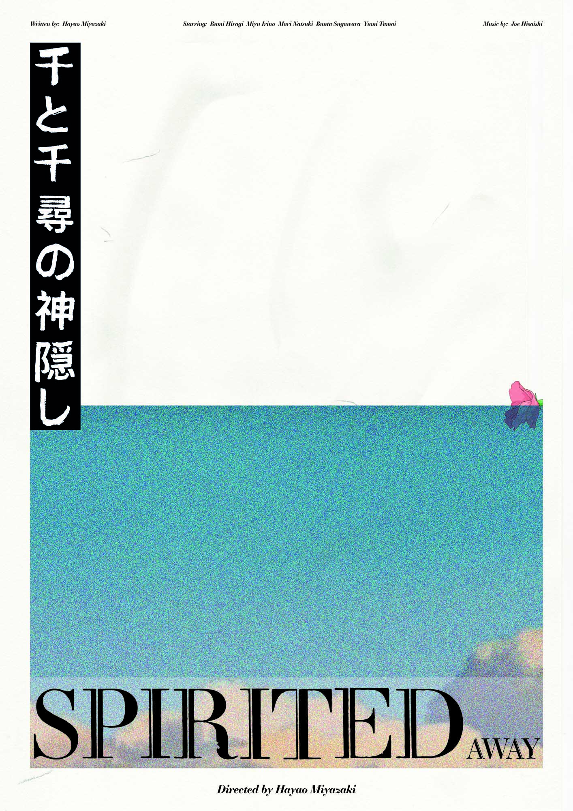
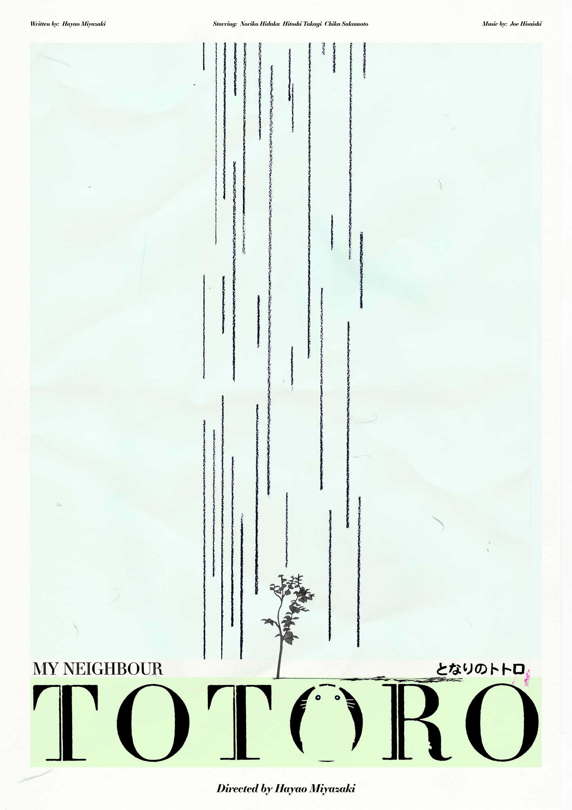
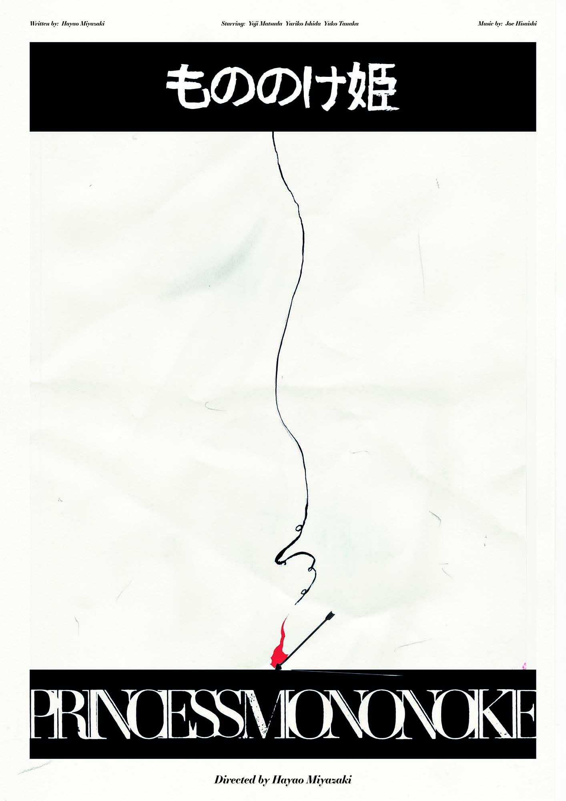
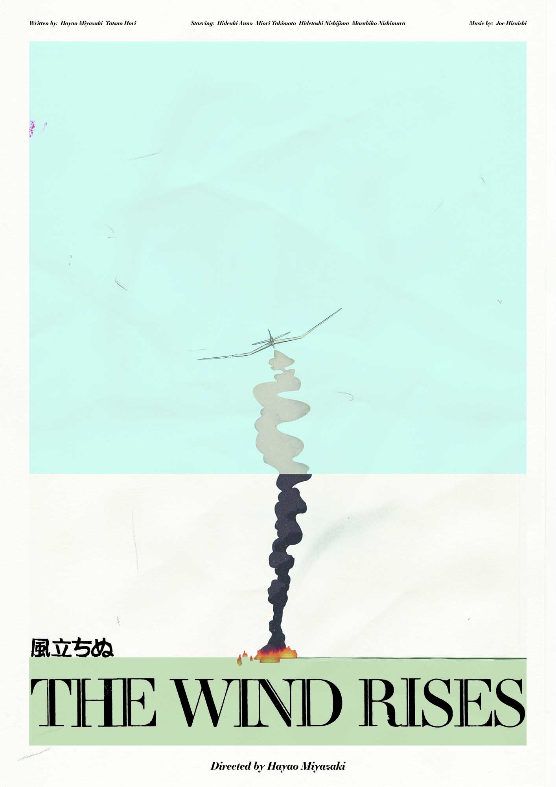
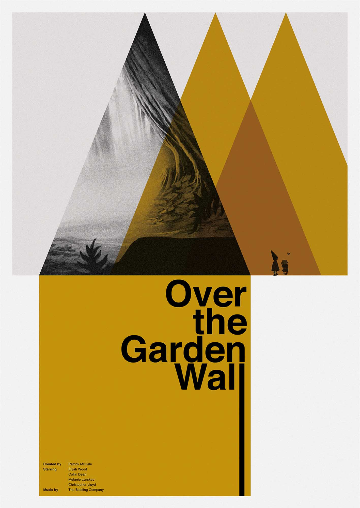
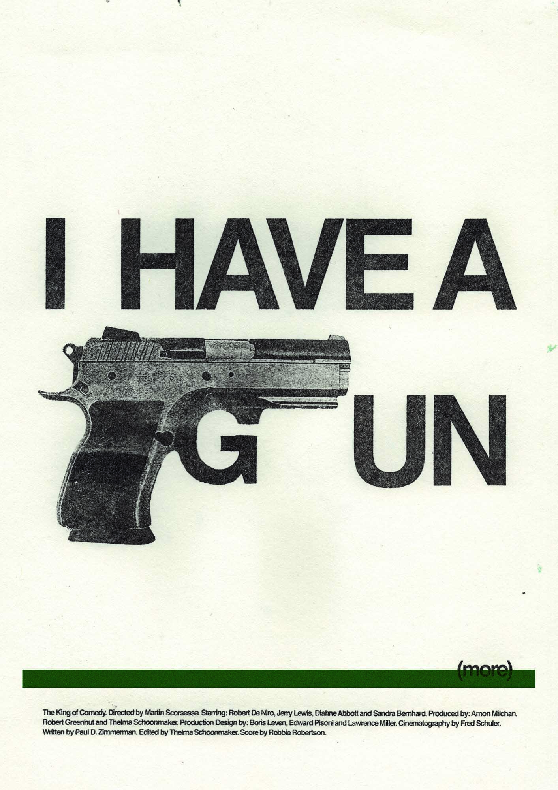

Design

The Good, the Bad and the Ugly (1966)
A bounty-hunting scam joins two men in an uneasy alliance against a third in a race to find a fortune in gold buried in a remote cemetery.
Designed in 2019.

Lupin III: The Castle of Cagliostro (1979)
Arsene, a brilliant thief, along with his colleague, rescues a princess from thugs. Soon they realise that she holds part of the key to a treasure that they have been looking for.
Designed in 2019.

Spirited Away (2001)
Ten-year-old Chihiro and her parents end up at an abandoned amusement park inhabited by supernatural beings. Soon, she learns that she must work to free her parents who have been turned into pigs.
Designed in 2019.

My Neighbour Totoro (1988)
Two sisters relocate to rural Japan with their father to spend time with their ill mother. They face a mythical forest sprite and its woodland friends with whom they have many magical adventures.
Designed in 2019.

Princess Mononoke (1997)
While saving his village, Ashitaka, a heroic warrior, is befallen with a curse. To lift the curse, Ashitaka embarks on a perilous journey and gets involved in the conflict of two warring clans.
Designed in 2019.

The Wind Rises (2013)
Jiro Horikoshi studies assiduously to fulfil his aim of becoming an aeronautical engineer. As WWII begins, fighter aircraft designed by him end up getting used by the Japanese Empire against its foes.
Designed in 2019.

Over the Garden Wall (2014)
On an adventure, brothers Wirt and Greg get lost in the Unknown, a strange forest adrift in time; as they attempt to find a way out of the Unknown, they cross paths with a mysterious old woodsman and a bluebird named Beatrice.
Designed in 2020.

The King of Comedy (1982)
Rupert Pupkin desperately wants to become a comedian and approaches talk show host Jerry Langford for a chance to perform on his show. When all fails, he teams up with Masha to kidnap Jerry.
Designed in 2020.